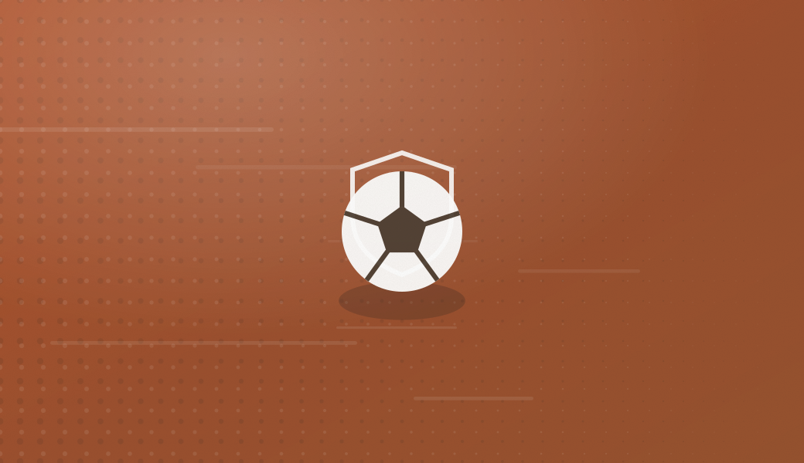

Un club de barrio, formativo y sin ánimo de lucro
El Corre Cancún nació en 2007 con un objetivo sencillo: que los niños y niñas del barrio pudieran jugar al fútbol cerca de casa, bien organizados y con buenos valores.
Nuestra historia
El Corre Cancún es un club formativo de fútbol base. El club trabaja con cinco categorías, organizadas por año de nacimiento: Baby Corre (2023-2024, de 2 y 3 años), Inicial (2021-2022), Infantil Menor (2019-2020), Niños Héroes (2017-2018) e Infantil Mayor (2015-2016).
Los equipos entrenan durante la semana y disputan partidos de liga infantil y encuentros amistosos con otras escuelas de la ciudad. Además del entrenamiento por categoría, el club ofrece sesiones específicas para porteros.
No somos un club profesional: somos un club de barrio, formativo e independiente. Muchos de nuestros niños y niñas siguen después su camino en clubes más grandes de la ciudad, y eso también lo celebramos.

Escudo y valores
El escudo une el correcaminos —rápido, tenaz, de aquí— con el balón y los colores del club. Como en los dibujos, el correcaminos nunca deja de intentarlo: no buscamos el camino fácil, trabajamos, insistimos y seguimos avanzando. Corre con nosotros y vive la experiencia. #CorreXTusSueños
Estos son los principios que guían cada decisión:
Junta directiva
La junta es voluntaria y se renueva cada cuatro años en asamblea. Las cuentas del club se presentan cada temporada a todas las familias socias.
Cuerpo técnico y coordinación
Instalaciones
Cancha del club
Campo de césped sintético donde entrenan y juegan como locales todas las categorías. Sesiones entre semana por la tarde.
Partidos como visitante
Cuando jugamos fuera, lo hacemos en canchas de otras escuelas de la ciudad. La convocatoria de cada partido indica el campo y la hora.
Cómo llegar
Escríbenos por el formulario de contacto y te compartimos la ubicación exacta de la cancha y los horarios de tu categoría.
Compromiso con el menor
Todo el personal técnico dispone del certificado de delitos de naturaleza sexual y firma el código de conducta del club. Contamos con un delegado de protección al que cualquier familia puede dirigirse de forma confidencial.
Trabajamos la igualdad de forma activa: niños y niñas entrenan y juegan juntos en la misma categoría, con las mismas oportunidades y el mismo trato.
¿Quieres formar parte del club?
Como jugador, como familia voluntaria o como colaborador. Hay muchas formas de sumar.